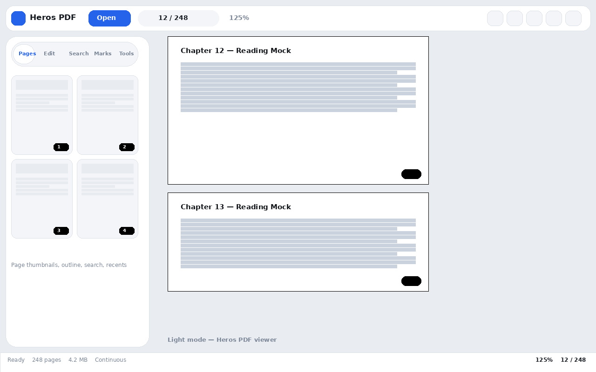
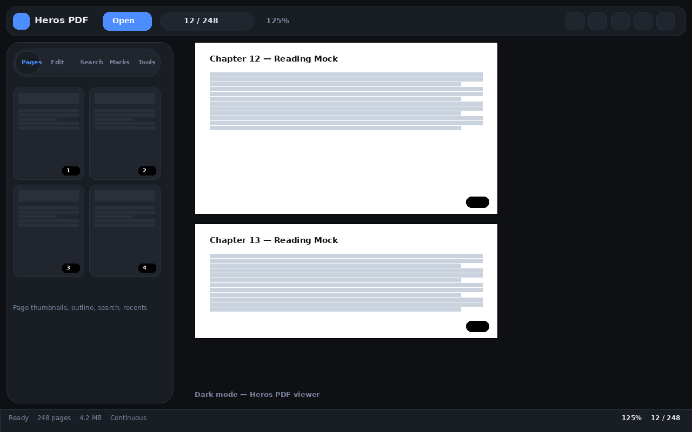
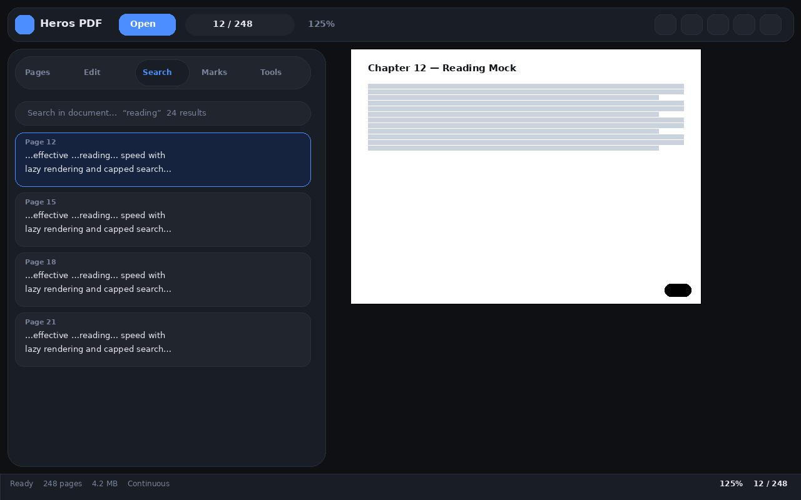
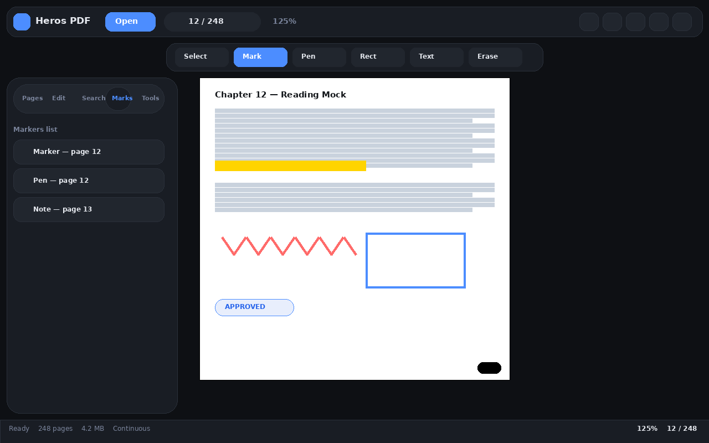
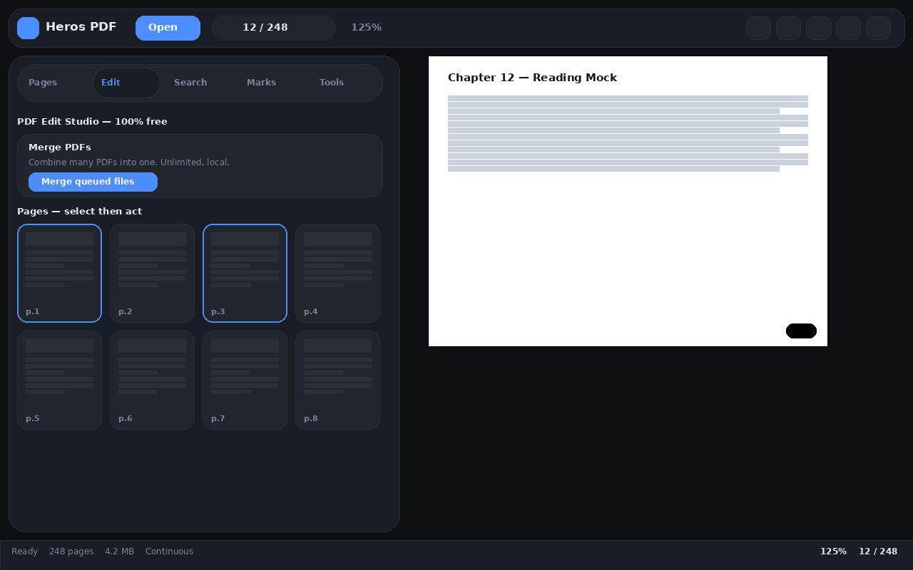
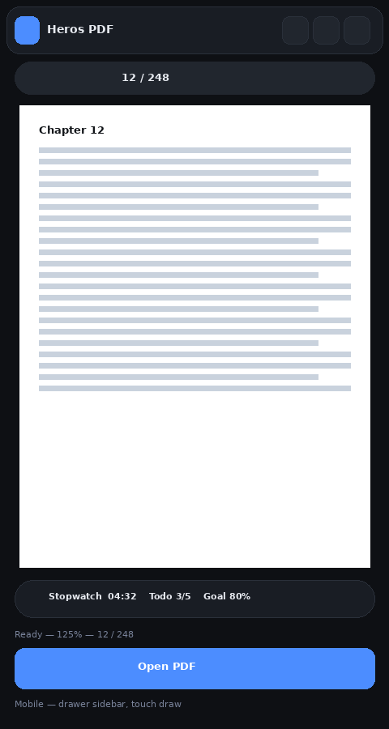

Read, annotate, merge, split, watermark and search — right in your browser. Silent instant boot, ultra-rounded design, 11 annotation tools, full-text search, stopwatch, counters and todos. No account, no upload, no limits. Free forever, open source, zero emojis in the docs by policy.
One extension. Four studios. Zero paywalls. The full printable catalogue lives in docs/FEATURES.md. The manual lives in docs/USER_GUIDE.md.
Continuous + single-page, fit-width/fit-page/800% zoom, 2-up spread, auto-scroll, remember-last-page, encrypted-PDF unlock, drag-and-drop open.
Full-document index, 800-result cap, context snippets, case + whole-word toggles, prev/next match jumping with highlight ring.
11 tools — highlight, pen, arrows, shapes, text, stamps, eraser — with undo/redo, auto-save per document, burn-into-PDF export, touch drawing.
Merge, split with 1-3,5,8-10 ranges, delete, reorder, rotate, watermark, page numbers, fix page size. Unlimited, offline, MIT-ported engine.
Dark + Light UI plus Night / Sepia / Dim page modes, focus mode, copy-and-share page text, reduced-motion support.
Auto-opens file:// and https:// PDFs with separate toggles, right-click Open with Heros PDF, compact popup control center.
Drawer sidebar under 900px, zero hidden features under 640px — zoom, fit, rotate, edit, night mode and a scrollable quick-action row, touch drawing down to 360px.
No server, no analytics, no account. IndexedDB stores only your recents + annotations, on your device. Minimal permissions.
Lazy render + 700px preload, epoch-guarded paints, DPR capped at 2, chunked sizing, silent boot — opens 1000-page PDFs instantly.
Stopwatch with laps, unlimited counters, automatic reading tracker with streaks and goals, file + global todos. All auto-saved, all free. Press T.
Same Mermaid diagrams as the README. Copy any block into a Markdown viewer to re-render it.
Browser popup (toggles) --message--> background worker --redirect--> viewer tab viewer --uses--> vendor (pdf.js, pdf-lib, qpdf, cmaps) viewer --uses--> nevaipdf-ops (merge/split/rotate/watermark) viewer <--> IndexedDB (recents + annots) viewer + popup <--> chrome.storage.local (prefs)
Open (file/drop/URL/recent) -> docIdFor(name+size+hash) -> getDocument -> metadata -> baseSizes (page 1 fast, rest chunked) -> buildPages + observer -> visible? --yes--> renderPage: canvas + textLayer + linkLayer -> highlight + annot overlay -> rendered
Your PDF --> stays on device (blob: URL) --> renders in page --> recents + annots in IndexedDB (local only) Your PDF - - NEVER - -> Internet
More diagrams (folder map, lifecycle, annotation engine, search engine, edit engine, responsive breakpoints) are in the README and docs/architecture.md.
Engineering notes for contributors: the resilience rules, the storage contract and the performance budget that keep it instant on 1000-page files.
error -> type stale epoch -> abort + retryRender once render cancelled -> treat as normal, re-queue wrong password -> unlock modal re-prompts CORS on URL fetch -> hint: download then drag and drop file:// blocked -> hint: enable file URLs permission missing vendor -> fatal banner naming the file runtime error -> global handler -> toast with the real message
open document -> recents + last page (IndexedDB) draw or erase mark -> stroke JSON (IndexedDB, pruned to 60 docs) settings/profile -> prefs (localStorage) tools tab actions -> stopwatch / counters / tracker / todos (localStorage) Hub -> Backup => one JSON (format v4) Hub -> Restore => re-import (additive, version-tolerant)
| Budget | Target | Mechanism |
|---|---|---|
| Open 50-page PDF | under 1s | Skeleton + progress bar, first size fast, chunked rest |
| Scroll jank | Zero | Only visible pages render, 700px preload, content-visibility |
| Search on 2000 pages | Responsive | Index once, cap 800 hits, list first 300 |
| Memory per page | 1 canvas | DPR capped at 2, thumbs about 150px wide |
| Boot | Instant | Boot class disables all load animations |
Deep dive: docs/architecture.md · docs/API.md · docs/TESTING.md
Nine pages plus the README. Everything is plain Markdown, printable, and emoji-free by policy (CI enforces it).
The long one: descriptions, 22 diagrams, sequence flows, feature universe, handbook, engineering notes, glossary, 35-question FAQ.
From zero to reading in 30 seconds, including file-URLs permission, context menu and upgrade/uninstall.
Every panel explained: navigation, search, annotate, edit ops, comfort modes, mobile, productivity studio.
The complete checkable list of what ships today plus what is roadmap.
State model, epoch-guarded render pipeline, coordinate spaces, storage schema, performance budget.
Eleven Mermaid diagrams in one printable page: processes, engines, storage, breakpoints, security boundary, open flow.
NevaiOps edit functions, tools studio state and keys, viewer engine symbols, backup format v4.
The manual matrix for viewing, annotate, edit, productivity, persistence, themes and the release gate.
Version timeline, wishlist, and exactly how each release is cut and published.
Thirty questions: product, install, viewing, annotating, mobile, accessibility, security.
Shipped, in progress and planned. Vote with a thumbs-up on the feature request to move a version up.
| Version | Theme | Status | Headline |
|---|---|---|---|
| 2.0.0 | Manifest V3 rewrite | Released | Service worker, dark + light, auto-open, context menu, popup |
| 2.3.0 – 2.3.2 | Search, Edit, Ultra-round studio | Released (current) | Outline + full-text search, merge/split/rotate, design system, silent boot |
| Current build | Productivity studio + mobile-full | On main | Stopwatch, counters, reading tracker, todos; no hidden controls on phones |
| 2.4 | Forms and signatures | Planned | Acroform filling, drawn signature placement |
| 2.5 | OCR | Planned | On-device OCR for scanned pages, searchable output |
| 3.0 | Distribution | Planned | Web Store listing, Edge Add-ons, Firefox port |
Release process, versioning rules and the timeline diagram live in docs/ROADMAP.md. Release notes template: .github/RELEASE_TEMPLATE.md.
Real captures from the app (mock previews — replace the files in docs/screenshots/ with your own 1:1 anytime). The README shows the same images.






Works on Chrome, Edge, Brave, Opera, Arc — any Chromium browser. Illustrated guide: docs/INSTALLATION.md.
git clone https://github.com/Ahmedbakr78/Heros_PDF.git or Download ZIP + unzip.
Open chrome://extensions → enable Developer mode (top-right).
Load unpacked → select Heros_PDF/pdf-studio-extension/ → Pin Heros PDF.
Details → enable Allow access to file URLs for file:// auto-open.
git clone https://github.com/Ahmedbakr78/Heros_PDF.git cd Heros_PDF # chrome://extensions → Developer mode → Load unpacked → pdf-studio-extension/ # Optional local preview (no install): cd pdf-studio-extension && python3 -m http.server 8000 # → http://localhost:8000/viewer.html
Full list is also in-app: More → Keyboard shortcuts. Full manual: USER_GUIDE.md.
| Keys | Action | Keys | Action |
|---|---|---|---|
| Ctrl+O | Open file | Ctrl+F | Search |
| Left Right | Prev / next page | Home End | First / last |
| + - 0 | Zoom in / out / reset | Ctrl+B | Sidebar |
| Ctrl+Z | Undo annotation | F / R | Fit width / Rotate |
| Ctrl+P | Esc | Close dialog | |
| Space | Scroll down | Shift+Space | Scroll up |
Built-in viewers show pages. Web tools charge you. Heros does everything, locally, free.
| Heros PDF | Chrome viewer | Typical web tool | |
|---|---|---|---|
| 100% local / offline | Yes | Yes | No (uploads) |
| Annotate + save (11 tools) | Yes | No | Partial / paywalled |
| Merge / Split / Watermark | Yes, unlimited | No | Partial / daily quota |
| Dark + Night + Sepia | Yes, 4 modes | No | No |
| Full-text search + outline | Yes | Partial | Partial |
| Price | Free forever | Free | Freemium |
| Open source | Yes, MIT | No | No |
Copy-paste source: .github/GITHUB_META.md. No emojis anywhere.
| Field | Value |
|---|---|
| Description | Heros PDF — fast, private, beautiful PDF viewer and editor. Read, annotate, merge, split, search. Dark + Light, mobile-ready, 100% local, free and unlimited. |
| Website | https://ahmedbakr78.github.io/Heros_PDF/ |
| Topics (20) | pdf, pdf-viewer, pdf-editor, pdf-annotator, chrome-extension, edge-extension, brave, manifest-v3, pdfjs, pdf-lib, qpdf, merge-pdf, split-pdf, annotate-pdf, dark-mode, ebook-reader, offline-first, privacy, open-source, javascript |
| Release | v2.3.2 — Ultra-Round Studio + notes from .github/RELEASE_v2.3.2.md + attached zip |
Thirty answers live in docs/FAQ.md. The top 8:
Is it really free?
Yes — MIT-licensed, unlimited pages, merges and annotations, no watermark, no account.Do my PDFs upload anywhere?
No. Files stay on your device via blob: URLs. No analytics, no server.Why won't file:// auto-open work?
Enable Allow access to file URLs in chrome://extensions → Heros PDF → Details.URL open says CORS error?
Some hosts block cross-origin fetch. Download the file, then drag and drop it into the viewer.Are annotations saved?
Yes — per-document in IndexedDB, survives reload. Export burns them into the PDF.Which browsers?
Any Chromium (Chrome, Edge, Brave, Opera, Arc). Firefox port is on the roadmap.Is todo.txt uploaded to the repo?
No. It is deleted and git-ignored. Never commit private notes.Are there emojis in the docs?
No. Docs, website and templates are emoji-free by policy, enforced by CI.
Two seconds to star. Forever free because of you.